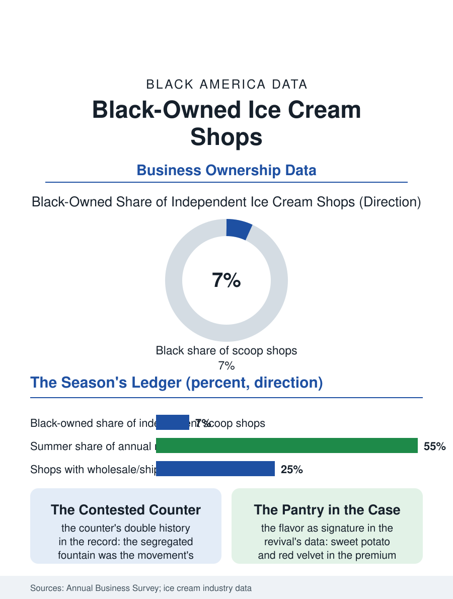

Black Business
The Season's Sweetness: Black-Owned Ice Cream Shops
The contested counter become the craft's signature case, the season's line the neighborhood's barometer. The ice cream file.

The ice cream shop is the celebration economy's smallest sweet unit, and its Black-owned tier carries a particular history: the scoop shop as the freedom era's contested counter, the sit-in's geography being substantially the lunch counter and the soda fountain, and as the current era's artisanal revival's storefront, where the flavor itself becomes the culture's signature. The business census folds the shops into the snack and beverage categories. This article reads the ice cream file.
The Counter's History
The fountain's place in the civil rights record is the file's foundation: the segregated counter was the era's chosen battleground precisely because it was the everyday's public room, and the Black community's own fountains and scoop shops, in the business districts the era's maps color, were the counter's other side, the room where the community served itself in the style the white fountain reserved. The trade's economics in the classic form were the dairy file's: the shop as the creamery's retail face or the independent's own batch, the seasonality written into the lease's structure in the northern cities, the winter's counter trade in the soups and the fountain lunches that carried the shop to the spring. The franchise era standardized the scoop into the national chains whose pink and brown signs standardized the American ice cream parlor, and the independent's survival through that era ran on the neighborhood's loyalty and the recipe's distinction in the pattern of the other food files. The truck deserves the file's mobile chapter, the ice cream truck's route being the shop's ancestor and its seasonal adjunct, its music the summer's soundtrack in the neighborhoods the truck has served for generations, and its proprietor, often the shop's own founder in the first season's form, the trade's entry rung whose bell still announces, in the blocks that know it, the same arrival the window's line waits for at the store.
The Artisanal Scoop
The current revival repriced the scoop on the craft's terms: the small batch, the local dairy, the flavor as the maker's signature, and within that revival the Black-owned creamery has built a visible tier, its flavors reading the culture's pantry, the sweet potato and the bourbon corn and the red velvet, into the case at the premium the craft commands, with several of the era's noted shops growing into the regional wholesale and the shipped pint, the direct channel's freezer box carrying the neighborhood's flavor to the diaspora's doorsteps in the pattern of the other food brands' files. The shop's community function is the file's constant across the eras: the ice cream social is the church's and the school's fundraiser of choice, the shop the sponsor of the Little League's postgame in the trade's oldest marketing, and the summer evening's line at the window the neighborhood's barometer of itself, a civic instrument disguised as a dessert.
The Season's Sweet Ledger
The ice cream file closes on the shop's economics of joy, the smallest ticket in the celebration files with the highest frequency of the family's small celebrations, a business whose true product is the occasion it gives the ordinary evening to become a memory, priced within the child's own allowance in the classic form and within the craft's premium in the new. The seasonality remains the file's discipline, the winter's reinventions, the hot drinks and the pints for the holiday table, deciding the year's profit in the months the window's line is gone. The census counts the shops within the food categories' folds. The file's last entry is the window at dusk in July, the line of the neighborhood in its summer clothes, at the counter the era's battles made ordinary, ordering the flavor the shop's name is becoming known by, which is the whole history, the contest, the craft, and the community's sweetness, served in a cone and eaten on the sidewalk the shop has anchored for as long as its lease and its line can renew each other. The birthday cake order book is the shop's annuity in miniature, the names and the dates recurring across the years as the children grow through the sizes of celebration, a ledger the proprietor reads as the neighborhood's own family record kept in buttercream.
More in Black Business
Black-Owned Businesses: Counts, Receipts, and the Representation Gap
About 161,000 Black-owned employer firms and three million solo ventures: how the Census Bureau counts Black business ownership, where firms concentrate, and the gap between population share and business share.
Black Median Net Worth: The Wealth Gap in Federal Reserve Data
The Federal Reserve puts Black median family net worth at $44,900, against $285,000 for White families — about 16 cents on the dollar. The widest gap in economic data.
Black Buying Power: The $1.8 Trillion Consumer Economy
Black buying power is estimated at about $1.8 trillion — larger than the economy of most nations. What the figure measures, who produces it, and what it buys.
Source: U.S. Census Bureau, Annual Business Survey for snack and nonalcoholic beverage bars; International Dairy Foods Association data.